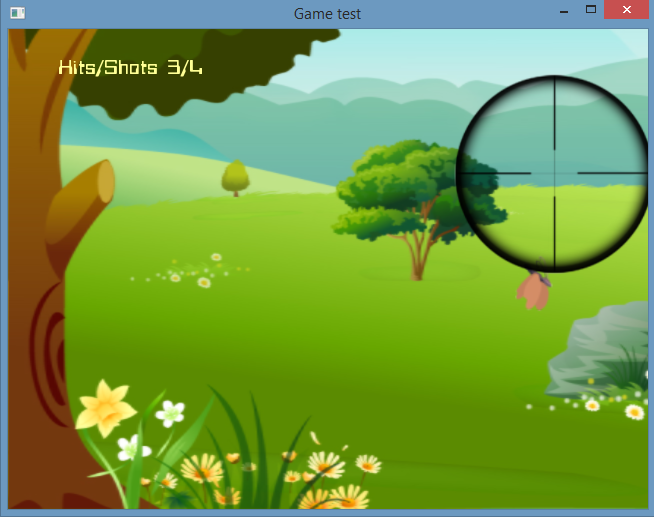
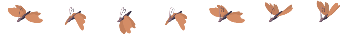
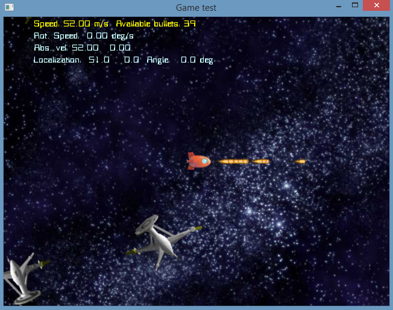

Biicode already has the first adaptations of libraries like SDL, glui or freeglut, which standardize the access to the windows system. With a little bit of design, and aiming to simplify the life of the programmer, I designed some classes that can be very useful for simple 2D games. The following images are screenshots of two examples included in examples/game_utils. The second one corresponds to the shooting game application we’ll develop in this mini-tutorial:

sdl and opengl with biicode
Most of the “Arcade” games contain the same types of elements: scroll-able backgrounds, sprites (static or animated), text info and sound. With those elements, each game determines the specific logic, with its stages, levels, and interactions. It is also necessary to interact with the game via the keyboard, mouse, joystick etc.
In miguel/game_utils the class OpenglGame is provided to easily design a 2D game simplifying the basic use of SDL and OpenGL libs.
Check the post’s example game immediately by executing:
1 2 3 4 5 6 | ~$ bii init game ~$ cd game ~$ bii open examples/post_game ~$ bii cpp:build ~$ cd bin ~$ #execute the game! |
Let’s take a step by step look into our game:
1. Create a project and a block to hold your code.
1 2 3 | ~$ bii init game ~$ cd game ~$ bii new username/simple |
Create the file game.cpp into blocks/examples/simple directory and put into it the code below to create a simple window:
1 2 3 4 5 6 7 8 9 10 11 12 | #include "miguel/game_utils/OpenglGame.h" class MiGame : public OpenglGame { ; //nothing to do } mainGame; int main(int argc, char** argv) //SDL requires this kind of main { mainGame.execute(); return 0; } |
Let’s retrieve the dependencies to the OpenglGame:
1 | bii find |
Biicode uses by default with MinGW, so if you want to build with Visual Studio execute:
1 | bii cpp:configure -G “Visual Studio 10” |
Build the example:
1 | bii cpp:build |
If everything worked out properly, a binary file was created into your bin folder: “examples_simple_game” .
Execute and check what happens: a simple window should appear.
If you compiled using Visual Studio, in addition to it, the system console also popups. To remove this unwanted additional window, we have to set the “SUBSYSTEM” property in Visual Studio for the exe target. We do this by adding the following lines to CMakeLists.txt after the ADD_BIICODE_TARGETS() line:
1 2 3 | if(MSVC) set_target_properties(${BII_game_NAME} PROPERTIES LINK_FLAGS "/SUBSYSTEM:WINDOWS") endif() |
2. Using the keyboard
Re-act according to keystrokes is quite simple, you only have to overwrite the onKeyboardDown virtual method. The following lines allow to end the application when the ESC key is pressed.
1 2 3 | void onKeyboardDown(SDL_KeyboardEvent k){ if(k.keysym.sym==SDLK_ESCAPE)this->exit(); } |
3. Drawing a background
Managing images and textures has always been a relatively tedious and repetitive task in OpenGL.
OpenglGame includes a png file reader and the Slide class to create backgrounds easily. The loading of textures, thus the creation of backgrounds and Sprites, must take place within a drawing context. In OpenglGame we do this redefining the setup() method.
Although it is possible to create sophisticated backgrounds, we will make use of the simplicity provided by the OpenglGame class for a basic background:
1 2 3 4 | bool setup(){ setBackground(new Slide(getTexture("data/background.png"))); return true; } |
Download our data folder utils .zip here and place the folder into blocks/username/simple, we’re using three different images and a font in this tutorial. For example this is our background:
Although everything compiles correctly, to run the program, it is necessary to maintain the relative path between the executable and the data. Add the following lines to your CMakeLists.txt right after INIT_BIICODE_BLOCK(). With this lines, the files in the data directory will be copied to the binary dir and to the IDE runtime directory:
1 2 | file(COPY ${CMAKE_CURRENT_SOURCE_DIR}/data DESTINATION ${CMAKE_CURRENT_BINARY_DIR}) file(COPY ${CMAKE_CURRENT_SOURCE_DIR}/data DESTINATION ${CMAKE_RUNTIME_OUTPUT_DIRECTORY}) |
Also update your dependencies.bii file, located into game/blocks/username/post_game, this tells biicode to also retrieve the local .png and .ttf files on our data folder:
1 | game.cpp + data/*.png data/*.ttf |
If you compile again, you’d see a window that has our image as background. In this case it has not established any special behavior on the background dimensions, so a default scale of 1:1 in pixels is applied, and the image will stick to the bottom left edges of the window. OpenglGame class defines its own coordinate system, placing the origin 0,0 at the lower left corner of the window. You have to be careful because events like mouse clicks and images are normalized to this unique coordinate system.
4. Loading, drawing and moving our first sprite:
Let´s include a simple sprite loading a png image. We add the crosshair variable to MiGame class to allows us to access the sprite attributes later:
1 | Sprite *crosshair; |
In the setup we include the creation of the Sprite, and we add it to the list of Sprites managed by MiGame.
1 2 | crosshair=new Sprite(getTexture("data/crossair.png")); addSprite(crosshair); |
Once created the crosshair, we’ve got to follow the mouse movement over the window. Just define the method onMouseMotion() and make the position of the sprite to match the mouse position:
1 2 3 | void onMouseMotion(SDL_MouseMotionEvent mmevent){ crosshair->pos=Vector2D(mmevent.x,mmevent.y); } |
If we compile and run the example, we’ll see that it works, but is little aesthetic that we continue seeing the mouse cursor when moving the crosshair. Therefore, in the setup, we will tell SDL to hide the mouse cursor:
1 | SDL_ShowCursor(SDL_DISABLE); |
4.1. Adding an animated sprite:
Although there are many ways to define a sequence of images that give the impression of movement in a sprite, one of the most common is to have a matrix of drawings with the consecutive frames of the animation.
To work comfortably with it, we’ve developed the SpriteSequence class as an specialization of the class Sprite. To use it you have to include the header file:
1 | #include "miguel/game_utils/SpriteSequence.h" |
In this case we will add a butterfly, which I have obtained from google searching “butterfly sprite sequence” :

The animation is defined by a 1×7 matrix, something that we have to specify when creating the SpriteSequence:
1 2 | butterfly= new SpriteSequence(getTexture("data/butterfly.png"),7,1,100,true,200,200); addSprite(butterfly); |
5. Moving the sprite:
As in most games, there is a cyclic method responsible of the game logic that we usually redefine: gameLoop (). Since this method is implented in the base class to manage the sprite animations, when redefined, we’ll include a call to the base class function. We add a very primitive intelligence to the butterfly based on Dice, a game_utils class which allows us to obtain random numbers in a simple way.
6. Printing Scores:
Finally, we will set a score, based on the number of shots and the number of hits. So we declare two integer variables that record these values, write the logic of shooting and we printing the result as overlay info of the game. Making use of the supplied font loading class on the method drawGame().
Results:
So your game.cpp file should look like this one:
1 2 3 4 5 6 7 8 9 10 11 12 13 14 15 16 17 18 19 20 21 22 23 24 25 26 27 28 29 30 31 32 33 34 35 36 37 38 39 40 41 42 43 44 45 46 47 48 49 50 51 52 53 54 55 56 57 58 59 60 61 62 63 | #include "miguel/game_utils/OpenglGame.h" #include "miguel/game_utils/SpriteSequence.h" #include "miguel/game_utils/Dice.h" #include "stdio.h" class MiGame : public OpenglGame { Sprite *crosshair; Sprite *butterfly; Sprite *squirrel; int hits, shots; void onKeyboardDown(SDL_KeyboardEvent k){ if(k.keysym.sym==SDLK_ESCAPE)this->exit(); } bool setup(){ SDL_ShowCursor(SDL_DISABLE); setBackground(new Slide(getTexture("data/background.png"))); crosshair=new Sprite(getTexture("data/crossair.png"), 100,100); butterfly= new SpriteSequence(getTexture("data/butterfly.png"),7,1,100,true,200,400); addSprite(butterfly); addSprite(crosshair); hits=0;shots=0; return true; } void onMouseMotion(SDL_MouseMotionEvent mmevent){ crosshair->pos=Vector2D(mmevent.x,mmevent.y); } void gameLoop() { OpenglGame::gameLoop(); if(Dice::Int(100)==1) butterfly->vel=Vector2D(Dice::Double(250,-250),Dice::Double(30,-30)); if((butterfly->pos.x<100)&&(butterfly->vel.x<0))butterfly->vel.x=-butterfly->vel.x; if((butterfly->pos.x>getWidth())&&(butterfly->vel.x>0))butterfly->vel.x=-butterfly->vel.x; if((butterfly->pos.y<100)&&(butterfly->vel.y<0))butterfly->vel.y=-butterfly->vel.y; if((butterfly->pos.y>getHeight())&&(butterfly->vel.y>0))butterfly->vel.y=-butterfly->vel.y; butterfly->horizontal_flip=butterfly->vel.x>0; } void onMouseButtonDown(SDL_MouseButtonEvent mb){ if(mb.button==SDL_BUTTON_LEFT){ shots++; if((butterfly->pos-Vector2D(mb.x,mb.y)).module()<20){ hits++; butterfly->pos=Vector2D(Dice::Double(getWidth(),100),Dice::Double(getHeight(),100)); } } } void drawGame(){ char text[100]; OpenglGame::drawGame(); sprintf(text,"Hits/Shots %d/%d",hits,shots); drawText("data/Bitwise.ttf",20,text,50,getHeight()-50,255,255,150,true); } } mainGame; int main(int argc, char** argv) { mainGame.execute(); return 0; } |
And this is the CMakeLists.txt:
1 2 3 4 5 6 7 8 9 10 11 12 13 14 15 16 17 | # This CMakeLists.txt file helps defining your block building and compiling # Include the main biicode macros and functions # To learn more about the CMake use with biicode, visit http://docs.biicode.com/c++/building.html # Or check the examples below include(${CMAKE_HOME_DIRECTORY}/biicode.cmake) # Initializes block variables INIT_BIICODE_BLOCK() file(COPY ${CMAKE_CURRENT_SOURCE_DIR}/data DESTINATION ${CMAKE_CURRENT_BINARY_DIR}) file(COPY ${CMAKE_CURRENT_SOURCE_DIR}/data DESTINATION ${CMAKE_RUNTIME_OUTPUT_DIRECTORY}) ADD_BIICODE_TARGETS() if(MSVC) set_target_properties(${BII_game_NAME} PROPERTIES LINK_FLAGS "/SUBSYSTEM:WINDOWS") endif() |
You’re ready to go, wanna try other examples available?

1 2 3 4 5 6 | ~$ bii init game ~$ cd game ~$ bii open examples/game_utils ~$ bii cpp:build ~$ cd bin ~$ #execute the games! |
Enjoy SDL and Open GL in biicode!
Hope you enjoy this new feature and, as always, we look forward to read what you think. Just click on the sidebar button to try biicode, check our docs, forum and/or Stackoverflow tag for questions and answers.
Related Posts